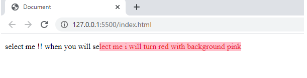

Cascading Style Sheets referred to as CSS, is a simple design language intended to simplify the process of making web pages presentable. CSS is not a programming language. It's not a markup language either. CSS is a style sheet language. CSS is what you use to style HTML elements selectively. Learning new CSS tricks is one of the best ways to shake up your website design.
Here are a few of the helpful CSS tricks that will definitely help.
On the web, we select content for different reasons. Maybe we want to copy a text and quote it somewhere, or maybe copying is just a habit that some users do it make reading easier. Usually, when the user selects any text on the web page, it has a white color with a blue background as blue. Why keep your webpage simple and the same as others. Here is an amazing trick.
p::selection{
background-color: pink;
color: rgb(235, 23,41);
}
The above code has a function of displaying red text with background color pink when selected.
The CSS overflow-x property defines what to do when content overflows the content box horizontally (i.e., left and right), such as displaying the content outside of the content box, clipping the content, or displaying a horizontal scroll bar.
div { overflow-x: hidden; }
In that above line of code, the content is clipped, the overflow content is hidden, and no horizontal scroll bar is displayed. This will display the webpage with no scroll bar horizontally, and hence no space will be wasted.
Note: Various other parameters are also available with overflow-x.
For selecting an element that doesn't have a certain class and in the case of multiple classes, the ":not()" selector is used.
body:not(p){
color:purple;
}
The above code will not apply the color purple for the tag <p>.
With background-blend mode, we define the blending between the element's background image and its background color.
body {
background-image : url(p1.jpg);
background-color: purple;
background-blend-mode :screen;
}
The scroll-behaviorproperty specifies whether to smoothly animate the scroll position, instead of a straight jump, when the user clicks on a link within a scrollable box.
*{
padding: 0;
margin: 0;
scroll-behaviour: smooth;
}
This can be useful when you want to move from down to top just by the click of a button